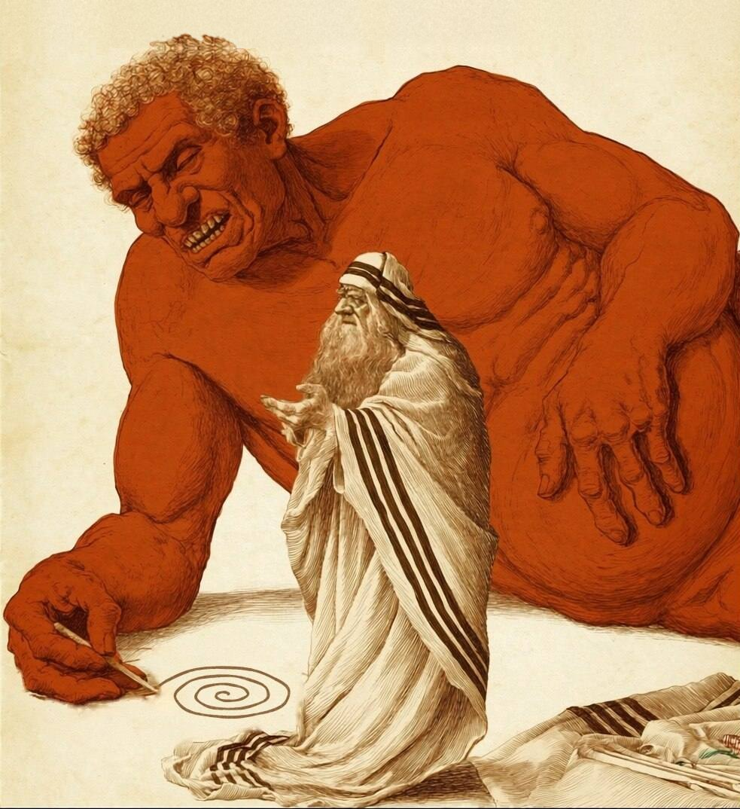

Golem
Трансформирующая оптика для жизни и сознания. Разбираем религиозные тексты и традиции — от неоплатоников до Гурджиева — и проверяем знание практикой, которую невозможно подделать.
Оглавление

Большой курс
Курс идёт потоком: все начинают в один день и проходят его вместе в закрытом Telegram-канале. Раз в неделю выходит видеоурок с практикой недели, а в общем чате можно задавать вопросы по материалу, в том числе анонимно.
- IПодчинение воображения и контроль над желанием
- II«Бессмысленные» повторяющиеся действия
- IIIЧеловек как машина
- IVУмная молитва
- VДеньги и духовность: игры с маятниками
- VIВход через тишину
- VIIСвященные тексты
Старт первого потока — 31 октября · 10 800 ₽


Индивидуальное ведение
Лекционный курс, который я составляю лично под вас: читаем, разбираем прочитанное и переносим знания в жизнь.
- Формат
- лекция онлайн раз в неделю и живой чат
- Длительность
- 3 месяца, полгода или год
- Стоимость
- от 2 000 $
Общедоступная библиотека
Хранилище текстов, которое я создала для вашего роста.
Лоция
Лоцией мореплаватели называют книгу о водах: где течения, мели и тихие гавани. Здесь это ваш личный маршрут по традициям и векам — на год.
«Хочу путешествовать по традициям и векам сам, в своём темпе и для удовольствия, но чтобы рядом был тот, кто знает эти воды».
После знакомства я прокладываю для вас личный маршрут — книги и традиции в продуманном порядке, с короткой заметкой к каждой гавани. Сколько их будет, зависит только от вас. Маршрут строится под ваш запрос или полностью на моё усмотрение.
Раз в месяц мы созваниваемся на час, сверяем курс и обсуждаем прочитанное. Весь год я на связи в чате и отвечаю в течение одного-двух дней.
2 000 $ за год
Обсудить маршрутЧтение с сопровождением
Если у вас есть очень конкретный запрос — одна книга, которую хочется прочитать по-настоящему.
«Я боюсь, что не смогу разобраться сам и всё понять правильно. Хочу читать под твоим руководством и сопровождением и обсуждать всё прочитанное».
Вы выбираете книгу — из библиотеки или свою, — и мы читаем её вместе. Я даю комментарий к каждой части, раз в неделю мы встречаемся онлайн на час и обсуждаем прочитанное. Я отвечаю на все ваши вопросы. Одна книга — около месяца чтения.
В отличие от ведения, здесь нет большой программы, составленной под запрос: только одна книга и разговор о ней. Программа гибкая и очень зависит от выбранной книги.
от 350 $
Хочу узнать цену